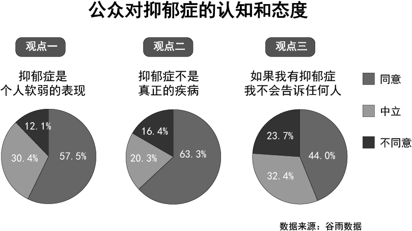
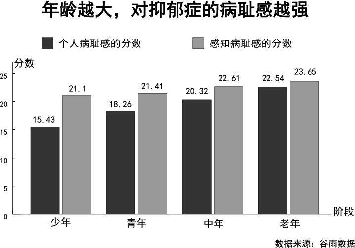

现实的世界有时会让人不堪重负，从而患上很多精神上的疾病，就比如：抑郁症。在确诊抑郁症之后，很多人的第一想法是：逃避。
在如今的社会舆论之下，对于抑郁症仍然存在着很多误解。他们会认为抑郁症是个人软弱的表现，并不是真正的疾病。这个是现代公众对于抑郁症认知上的偏差。

社会环境所带来的病耻感，让孩子们把自己层层包裹起来，将抑郁症变成独自吞咽的痛苦。因为承认自己患有抑郁症，得到的可能不是安慰和开解，而是诸如“矫情”“软弱”之类的指责和鄙夷。并且，年龄越大，对于抑郁症的耻感越明显，感知到的社会耻感也越明显。

如此的环境，会让抑郁症患者感觉自己受到了外界的歧视。渐渐地，他们变得不愿意寻求帮助、病情延误，甚至发生自杀行为。更深的困扰和恶性循环，来自于抑郁症患者家庭内部。对于一些父母来讲，承认子女患有抑郁症不是一件容易的事。他们会将孩子的个人品质和精神状况与抑郁症挂钩，或者先孩子一步崩溃：“我对你这么好，你为什么还会得抑郁症。”因此很多年轻人即使确诊了抑郁症，也不敢轻易告诉父母。自媒体「抑郁研究所」曾做过一份调查，根据318份病友的反馈，81.41%的子女不愿意和父母倾诉。因为即便和父母说出实情，也得不到理解。公众号谷雨数据通过“抑郁”关键词筛选出相关评论，发现很多家长对于抑郁症没有任何科学的认知。“她不过是个孩子，有什么压力？得什么抑郁症什么病不病的，我看就是装的。”“重抑郁五年了吧快，我妈最常说的一句话‘都是小时候太惯着你’……”“我妈说我抑郁症完整读完大学考完研这么多年没出事（指杀人或者自杀）已经很不容易了，她特别不耐烦地直接怼一句：那你想咋办，让我把你送精神病院？”一部分父母没有意识到的是，他们的存在本身，也是造成和加重孩子抑郁的原因之一。